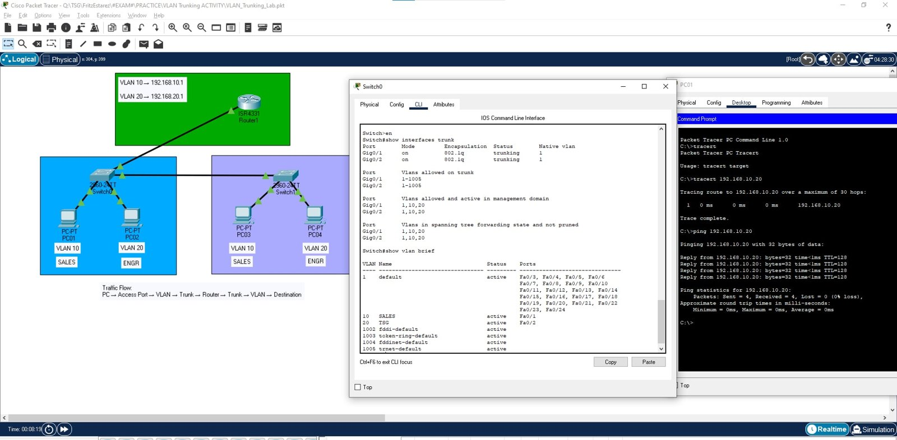

VLAN Trunking and Router-on-a-Stick Lab
Two switches, two VLANs and one router: same-VLAN PCs reach each other across a trunk, and the router connects the two VLANs.
ToolCisco Packet Tracer
Devices1 router, 2 switches, 4 PCs
VLANs2 (10 and 20)
RoutingRouter-on-a-Stick
Overview
Two switches, two VLANs and one router. PCs in the same VLAN reach each other across the trunk between the switches, and the router passes traffic between VLAN 10 and VLAN 20 using router-on-a-stick.
- Access ports carry one VLAN and connect the PCs.
- Trunk ports carry several VLANs using 802.1Q tagging.
- One physical router interface is split into sub-interfaces, one gateway per VLAN.
Traffic flow: PC, access port, VLAN, trunk, router, trunk, VLAN, destination.
Topology and test results

show interfaces trunk and show vlan brief) and a ping from PC01.Addressing
| Device | VLAN | IP address |
|---|---|---|
| PC01 | 10 (SALES) | 192.168.10.10/24 |
| PC03 | 10 (SALES) | 192.168.10.20/24 |
| PC02 | 20 (ENG) | 192.168.20.10/24 |
| PC04 | 20 (ENG) | 192.168.20.20/24 |
Default gateways: VLAN 10 uses 192.168.10.1 and VLAN 20 uses 192.168.20.1.
Configuration
Switch0: VLANs, access ports and trunks
enable
configure terminal
vlan 10
name SALES
vlan 20
name ENG
interface fa0/1
switchport mode access
switchport access vlan 10
interface fa0/2
switchport mode access
switchport access vlan 20
interface gi0/1
switchport mode trunk
interface gi0/2
switchport mode trunk
end
copy running-config startup-configSwitch1: VLANs, access ports and trunk
enable
configure terminal
vlan 10
name SALES
vlan 20
name ENG
interface fa0/1
switchport mode access
switchport access vlan 10
interface fa0/2
switchport mode access
switchport access vlan 20
interface gi0/1
switchport mode trunk
end
copy running-config startup-configRouter1: router-on-a-stick
enable
configure terminal
interface g0/0/0
no shutdown
interface g0/0/0.10
encapsulation dot1Q 10
ip address 192.168.10.1 255.255.255.0
interface g0/0/0.20
encapsulation dot1Q 20
ip address 192.168.20.1 255.255.255.0
end
copy running-config startup-configVerification and results
show vlan briefconfirms VLANs 10 and 20 with the right ports.show interfaces trunkon Switch0 shows Gig0/1 and Gig0/2 as trunking with 802.1Q.show ip interface briefon the router shows Gi0/0/0, Gi0/0/0.10 and Gi0/0/0.20 as up/up.- From PC01, a ping to 192.168.10.20 (PC03, same VLAN, across the trunk) got 4 of 4 replies with 0% loss.
Connectivity tests I ran
- From PC01: ping 192.168.10.1, ping 192.168.10.20, ping 192.168.20.10.
- From PC02: ping 192.168.20.1, ping 192.168.20.20, ping 192.168.10.10.
What I learned
A trunk lets one cable carry many VLANs, and a router with sub-interfaces gives each VLAN its gateway.
- Use access ports for PCs and trunk ports between switches and routers.
- Save the work with
copy running-config startup-config. - Test from inside the VLAN first, then across VLANs.
Downloads
Take the lab notes with you. The Packet Tracer file opens in Cisco Packet Tracer.